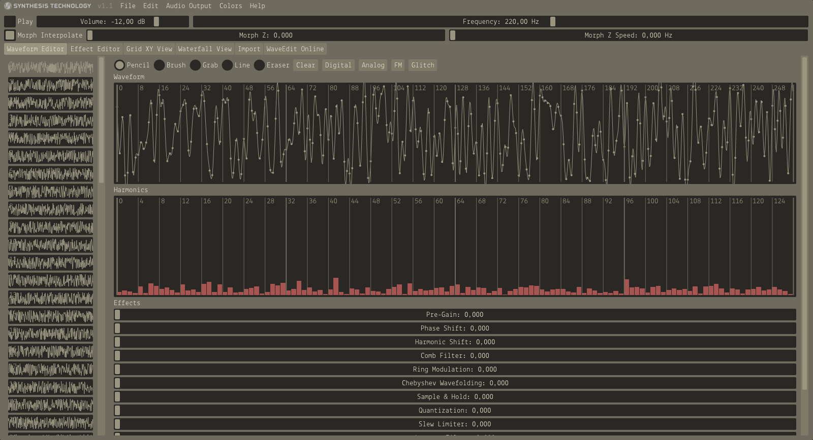
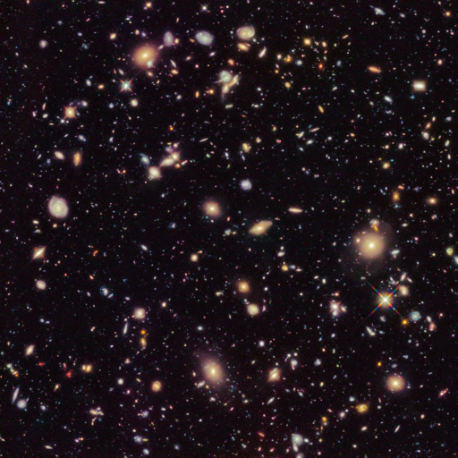

universum tonal – .wav
Coming back to my image to midi experiment I wanted to go a step further because I see several flaws with this midi-stuff. It’s neat to have midi files with what you can play with but there are flaws in my script. First of all there is the loss of information. A pixel on the y-axis with a fixed x value with identical properties of another pixel on the same axis will be ignored with my script. I don’t like this but with the limited capabilities of midi-files I am bound to certain decisions. Looking at the wave format I can do a lot more with overlapping frequencies, velocities, wave-forms, shapes and whatnot.
So my goal in this experiment is find a method to generate wave files out of images – basically a reverse spectogram.
So let’s dive into the waves (I’m sorry …)
The plan
Using wave files I have to many possiblities and opportunities that I have a lot more to decide. So let us look at an output of a wave file. I generated a second of noise with this script. I wanted to know what it looks like visually to understand the data a little bit more so I used the tool WaveEdit.
|  |
|---|
| WaveEdit with noise |
Looking at this we need to comprehend some stuff about wave files. First of all there is a framerate. This framerate determines how many frames per second are rendered. I used 44100 Hz in my script and therefore I have 172 frames per second. A couple of these frames can be seen on the left panel. On the right I can see a wave form made out of 256 ticks whereas I can set a point of a so called PCM values for each tick as I want.
I have several iterations planned with different settings and approaches. First I want to read the image pixel by pixel line by line from left to right and top to bottom where every pixel represents one tick. After that I want to read the image row by row using the pixels as heightmap and the last iteration will be a combination of all I know about wave files and pixels (more on that later). But first, let’s have some fun.
For that experiment I want to use a different image – the ultra deep field from hubble.
|  |
|---|
| Image Credit: ESO – Ultra Deep Field |
Pixel by Pixel
Different from the midi stuff in Wave I don’t have the possibility to use different channel for different notes – at least for now (I have ideas using the stereo and dolby channels later on). For this I want to be as simple as possible and build up from that. In this iteration I want to analyze each pixel, get the color (hue), convert it to a wave frequency (similar to the midi stuff) and set it as one tick.
I set the resolution of the image to 512×512 pixel again. This results in 262144 pixels which ultimately translates to 5.94 seconds of, well, noise (I think). I don’t want to go into the details of the script again but need to clarify some things. I accept a huge dataloss here because I only want to use the hue value of the pixel. I ignore saturation and lightness for the sake of simplicity.
After my first test I get this as result (link to YouTube).
Bear with me, the representation of the current position of the soundwave and the marker don’t correlate correctly because I’m not good at video editing (and lazy). But this sounds basically what I thought it would sound like. It’s not a good representation of the image as audio though but it’s something.
pixel as frequency
So this is not an accurate representation of an image. I don’t know if I’ll get close to it whatsoever but I can implement a lot of more information in a wave file. Let’s take a look at one frame. With 44100 Hz as framerate one frame with 256 means roundabout 0,0058. seconds. If I now fill 172 frames with a simple sine wave at a certain frequency I get one second of a single note. Let’s stick to the sine wave for now and check what we can do with it and what relation I can build up to the pixel information.
I have these values for the pixel: hue, saturation, lightness. And I have these values from the sine wave: amplitude and wavelength. Stating the obvious – hue represents the wavelength of the sine wave. But that’s wrong and I show you why. Let us do a little experiment with the first pixel of our sample image.
It got these values for HSV: H = 327, S = 42 and V = 10. The pixel in the image is really dark. I imagine that dark areas on an image should be in the bass section of the octave. Let’s asume H is equivalent to the frequency of a note: If H is 327 I get 7179 Hz as frequency. That’s in the area of A8 a very very high note. So obviously this doesn’t fit for a dark pixel.
So I have to do some decisions:
- Dark pixel should be in the bass section of the sound spectrum. Therefore I use the V value as equivalent to the octave. I have nine full octaves available.
- Within one octave the H decides on the frequency.
- The saturation is equivalent to the amplitude of my sine wave between 0 and 1 (floating point).
So with my test pixel and V = 10 I get the octave number 0. Octabe zero has frequencies available from 16.35 Hz to 30.87 Hz. With H = 327 I get 29 Hz as frequency of this pixel.
I really don’t know if this decisions are smart but at least these are some decisions 🙂
Okay, so let’s generate 262144 sine waves with this script which will give me 67108864 frames which in the end will be 1521,74 seconds long which are 25 minutes … okay. I did it and you can take a listen (YouTube-Link aigain).
Three notes at the same time?
I am not happy where I am heading. So let’s rewind a bit and think what we actually can do and what I want. Looking at the midi files I envy the easy possibility to add two different notes at the same time on the same channel without much effort. If I have two notes I have to generate merged sine waves based on the frequencies I got from the pixel.
Let’s try something first. I really like the B minor chord. For simplicity I just use the notes B, D and F# on the third octave. Converted to frequencies we got 246.94 Hz for B, 146.832 Hz for D and 185.00 for F#. Also I have a limited amplitude therefore I need to add or substract the PCM values of the sine wave to get the actuall tick values. Sounds complicated and luckily google helps me with the math of complex sound generation. With that script I got two seconds of a B minor chord.
With that knowledge I need to think about the image and pixel information again.
Row, row, row your boat
Now I really can play with this image and define what I want to do with the color information of each pixel in each row. First, I need to take a look at the pixel itself and then I need to look at the row and find relationships.
- As stated above the frequency will be generated with the lightness value in combination with the hue value.
- The saturation is equivalent to the amplitude.
- When having similar pixel in the row with the exact same frequency the saturation for the amplitude will be combined and calculated as relative amplitude to the sine wave. Initial the first pixel will get 50% of the amplitude. The rest is reserved for similar pixels in the row. If a pixel with the exact same properties occurs again their amplitude will be added relatively to the rest.
With this script I am basically done. I generated my first wave file with this with a samplerate of 2048 and a framerate of 44100. Each second contains 21 rows (take or given) and results in 23 seconds of noise. And this is what it sounds like (YouTube Link).
Well … wow I guess? Okay, there are flaws. The transition from row to row is rough and gives me periodical kicks. I don’t like that and currently I don’t know how to solve this. (If someone has an idea, let me know) Next thing: Black is heavy. This is a black image therefore I expect to have a lot of low notes and they add up. I’ve build in a switch to ignore frequencies below a certain point. In the next example I omitted frequencies below 65 Hz and used the same sample rate (YouTube Link).
That’s better. And way cooler than I expected. Next settings are a samplerate of 22050 (half a second per row) and ignored frequencies below 65 Hz (YouTube Link).
Conclusion
With the possibility to do stuff with each frequency in the calculation of the sine waves I basically have build a synthesizer. Which is not what I thought is going to happen. And now my brain wants to build GUIs, knobs and parameters, equalizers, mixers and and and aaaaaaah. I could also use saw and square waves based on the octave and frequency. The possibilities are huge. My time is not. And I can see myself procrastinating everything with this which wouldn’t be good. Therefore I leave it here … for now.
But this kick ...